Volver al menú de inicio
Volver al menú de inicio
Plato 2: Pescado al horno
- 1 dorada.
- 1 cebolla grande.
- 1 limón.
- Pimienta negra recién molida.
- Unas ramitas de romero o tomillo, frescas o secas.
- Aceite de oliva y sal.
- Compra unas doradas que tengan la piel bien brillante y los ojos transparentes. Pide en la pescadería que te las abran un poco y les quiten las tripas y también que las descamen y les corten las aletas. Yo en casa además las lavo bajo un chorro de agua fría y las dejo en un escurridor..
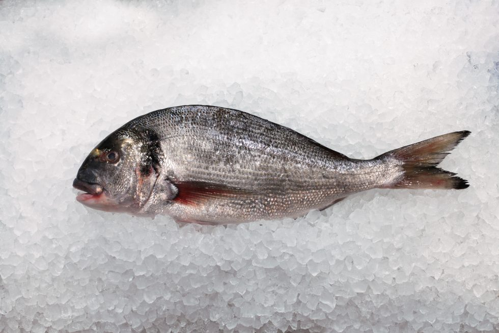
- Precalienta el horno a 180º mientras preparas la bandeja de horno con los ingredientes (no tardarás más de 10 minutos).
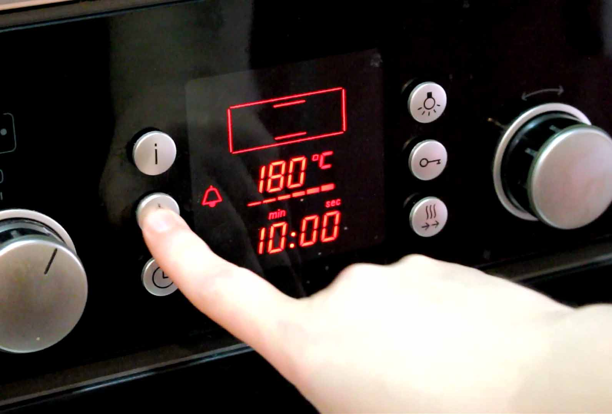
- Echa un chorrito de aceite de oliva virgen extra y un poco de sal en la bandeja.
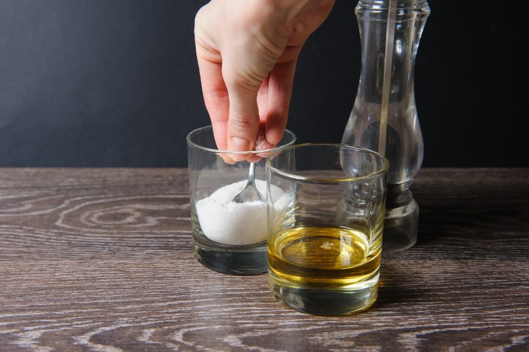
- Pela la cebolla, córtala en rodajas finas y ponlas en la bandeja cubriendo el fondo. Si una cebolla se te queda un poco corta añadir otra más, la idea es que el fondo esté prácticamente cubierto.
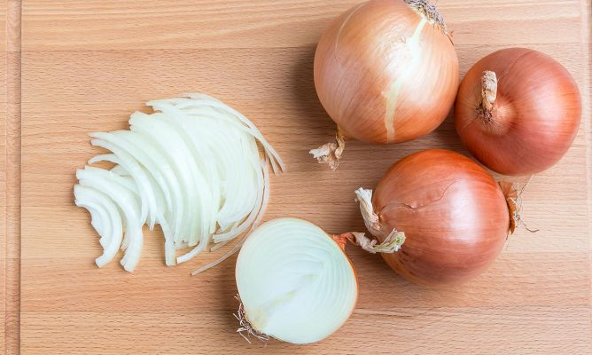
- Coloca encima las doradas y échales por encima un chorrito de aceite de oliva, un poco de zumo de limón, pimienta negra recién molida y sal.
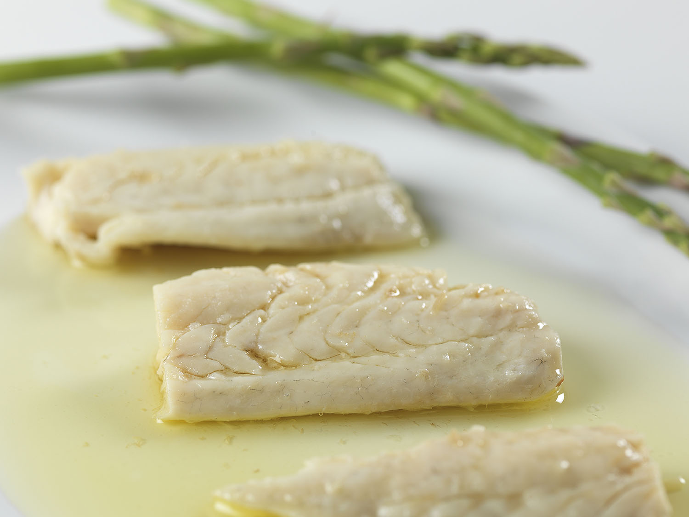
- Corta un par de rodajas gruesas de limón, divídelas en trocitos y espárcelos por la bandeja.
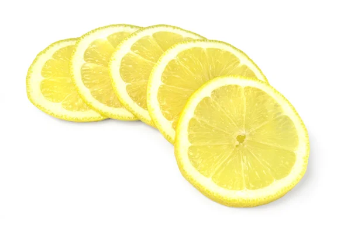
- Coloca también por encima las ramitas de romero o tomillo.
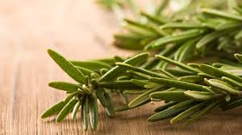
- Introduce la bandeja en el horno durante unos 20-25 minutos, o hasta que veas que el pescado está hecho pero evitando que se reseque en exceso. Para unas doradas de tamaño pequeño se necesitarían unos 20 minutos y las mías que son un pelín más grandes las tuve 25 minutos.
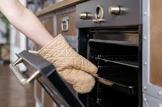
- Si quieres comprobar si está hecho puedes sacar un momento la bandeja, abrir un poco una dorada, coger un poco de su carne y comprobar que está hecha y a tu gusto.
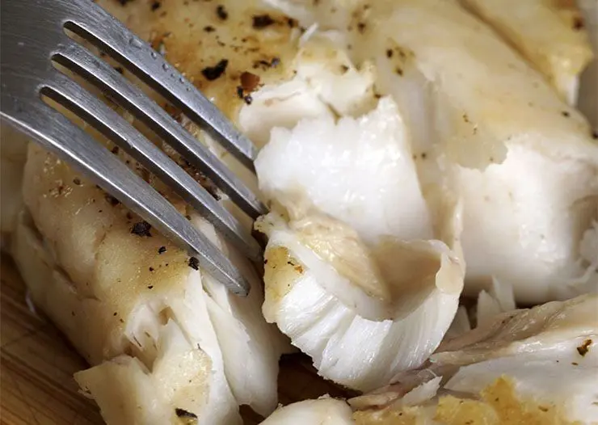
- Cuando estén listas saca la bandeja del horno y déjalas reposar al menos 5 minutos para que los jugos se asienten un poco.
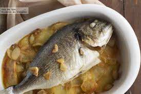
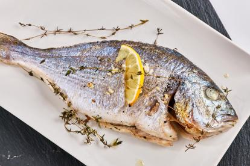
Volver a inicio